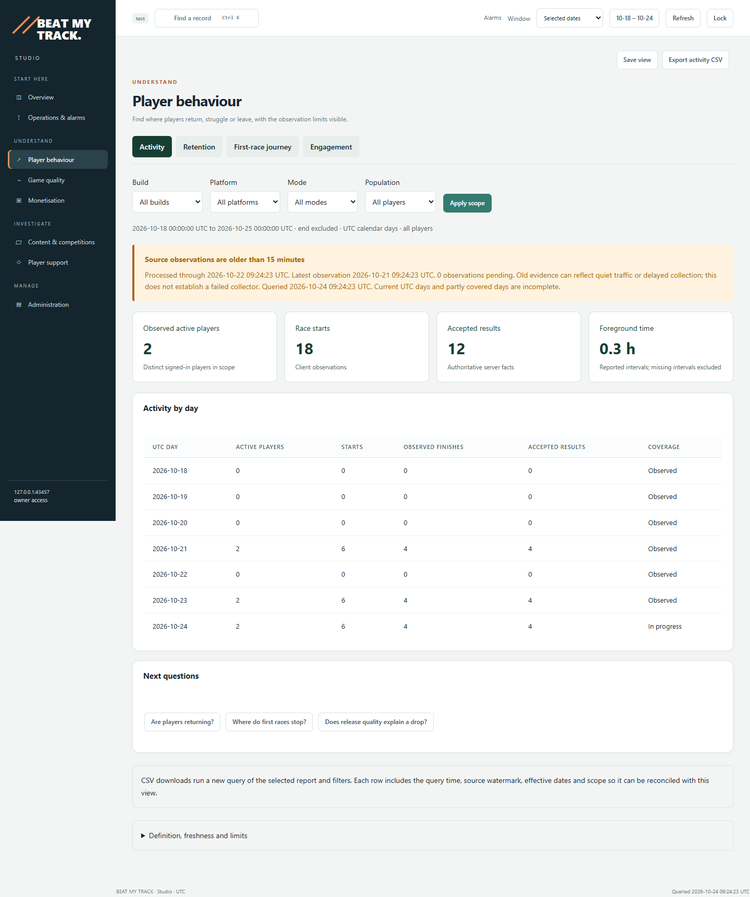
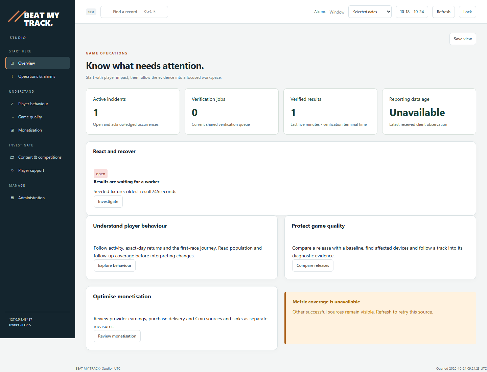
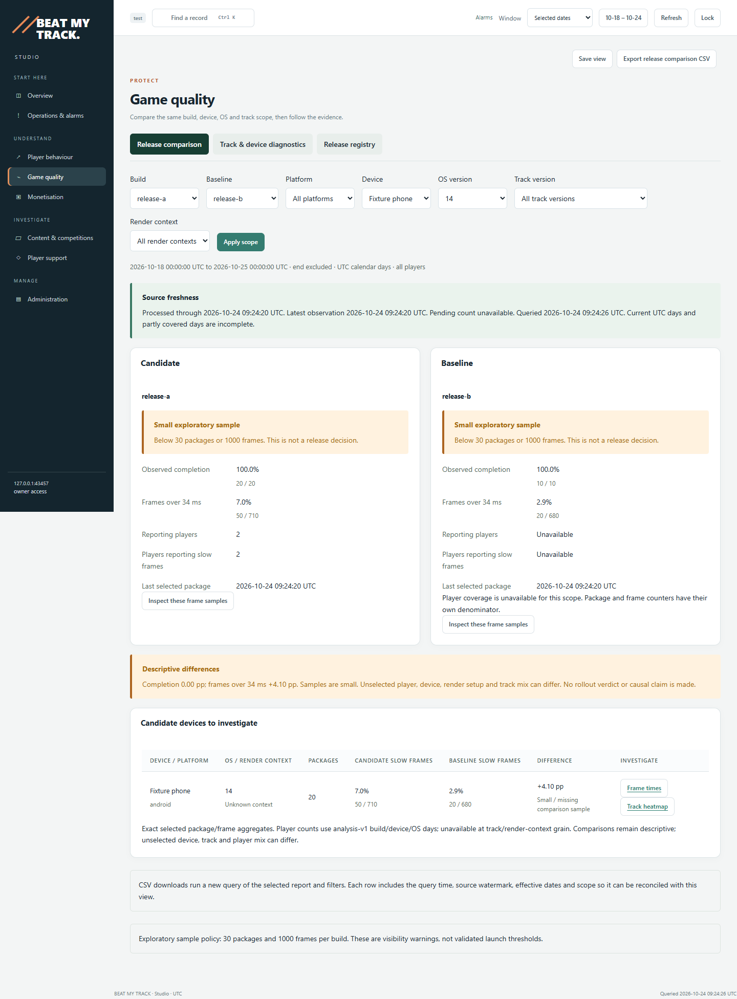
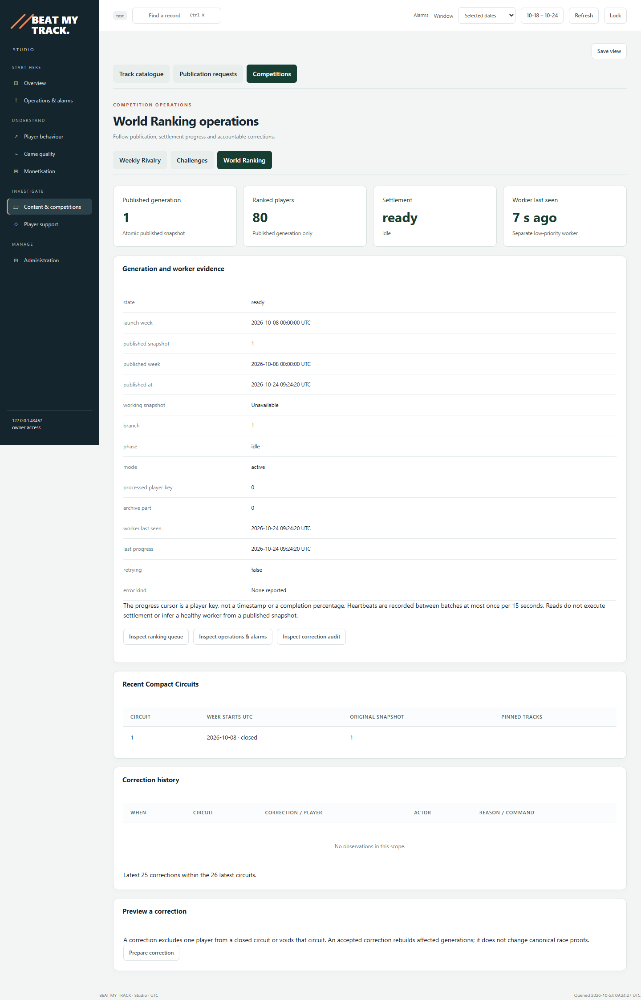
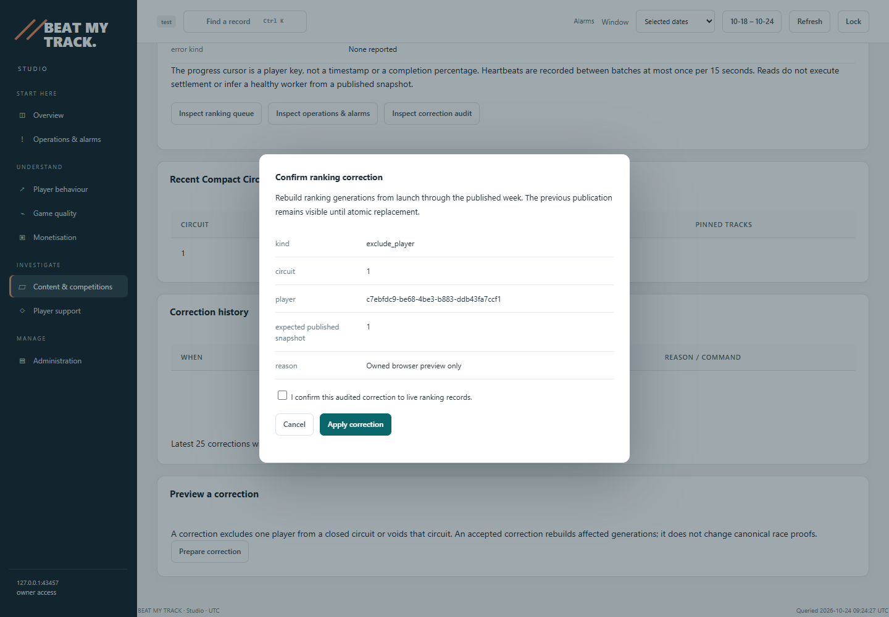
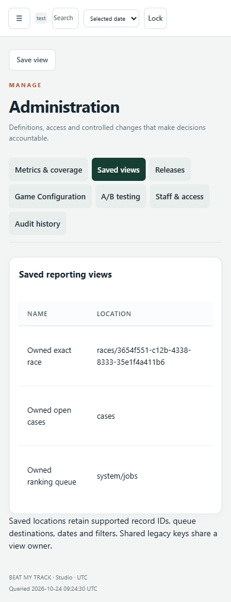

BEAT MY TRACK · LOCAL IMPLEMENTATION · 24 OCTOBER 2026Studio reporting and operations: items 1–4
Implemented reporting reliability, saved investigations, World Ranking operations and stronger release comparisons. Existing all-player defaults and canonical race behavior remain.
Structured receipt and source hashes · Scoped implementation patch · Browser checks · Backend results
BSI01Dependable reporting
Behaviour/release CSVs share isolated report queries, pool/concurrency/deadline and WAL-fence policy. Downloads identify a fresh query and carry scope, effective UTC dates, query time, source watermark and collection status. Guided report links retain compatible dimensions and disclose unsupported ones. Verification KPIs use their exact five-minute terminal-time interval. Freshness and pending work are visible, calendar gaps distinguish observed zero from unavailable coverage, and partial days are labelled. Independent overview feed failures retain other successful cards.
Verification: Replica-only fact SQL tracing; prompt busy/unconfigured failures; scope round trips; terminal-time reconciliation; stale-source and partial-feed fault injections.
BSI02Reliable saved investigations and downloads
Validated record IDs and system subroutes survive saved-location round trips using the existing JSON column. Case status and current configuration view/draft filters are retained. Rename/delete are actor-scoped, idempotent, revision-fenced and audited. Activity, retention, first-race journey, engagement and release comparison have dedicated CSV formats and explicit fresh-query provenance.
Verification: Player/race/queue/case round trips, rename/delete retries, foreign-actor/stale-revision/path rejection, CSV scope/provenance/formula handling and actual browser downloads.
BSI03World Ranking operations and worker coverage
Content & competitions has World Ranking publication/working generation, phase, progress cursor, worker heartbeat, last progress, recent pinned circuits and bounded correction history. Named audit actors and affected-player links are retained. Owners prepare a read-only impact preview, then explicitly confirm the existing revision-fenced correction command. Ranking worker metadata is sampled between batches at most once per 15 seconds. Ranking and achievement queues have bounded labelled counts; missing age or worker evidence stays unknown. Rebuilds do not borrow historical week age as a delay measurement.
Verification: Read/preview performs no settlement, correction or audit writes. Named correction replay and publication fences pass. Stale worker and unknown rarity age remain distinct; 10,001 pending projections return a labelled 10,000 bound.
BSI04Stronger release comparisons
Candidate and baseline share selected platform/device/OS/track/render-context scope on the isolated reader. Reports show weighted frame rates and differences, package/frame denominators, independent player-coverage availability, exploratory sample warnings and normalized device rows with scoped frame/heatmap links. Missing player coverage is unavailable rather than zero. Comparisons remain descriptive; no rollout verdict is inferred.
Verification: Exact paired aggregates and frame deltas; unavailable denominator handling; same-scope report/export parity; preserved device/build/OS diagnostic links and missing-baseline browser views.
Selected actual browser evidence
All screens contain isolated synthetic fixtures. Open an image for the full view.

Source age remains visible while details are closed.
A metrics-only failure retains incident and verification evidence.
Comparable release scopes, rate differences, source coverage and diagnostic links.
Published/working generation and separate worker progress evidence.
Read-only impact preview precedes a separate explicit confirmation.
Saved investigations and actions at a phone-width viewport.Corrections retained during implementation
- Concurrent authentication hardening required explicit test-only legacy credentials in the owned browser fixture.
- A shared operations navigation helper accidentally removed during UI replacement was restored; final browser flows pass.
- The engine-injection rejection fixture now explicitly selects a non-test environment after shared auth fixtures changed to test mode. The guard remains strict.
Limits and remaining acceptance
- The migration-preservation assertion for a retired discovery_budget table also fails with task-original edited modules on the same concurrent migration tree (0062_retire_discovery_cache). The assertion is retained; its failure is recorded separately and excluded from the final focused selection. This is not a full repository regression pass.
- PostgreSQL was unavailable and the existing Docker endpoint probe returned unavailable. SQLite correctness and mocked replica/deadline contracts do not certify production PostgreSQL plans, WAL replication or load.
- Matching API/admin assets, ranking worker and independent watchdog rollout is required. The reporting reader now also needs SELECT on race_statistics_days.
- The 15-minute source-age notice distinguishes old evidence from proven collector failure. Exploratory 30-package/1,000-frame warnings and worker delay thresholds need production calibration.
- Browser fixtures are synthetic, with a separately copied SQLite test reporting mirror. They are not canonical race, monetary, device-performance or live operational evidence.
- Phone/tablet attachment was not checked; no physical-device test, APK, live account/backend mutation, notification, provider purchase or deployment was performed.
- Concurrent authentication, Game Configuration, discovery, schema, game and documentation work was preserved. No gameplay or native binary was changed by this task.
The broader initial regression recorded 64 passes, two skips and two failures. The non-test injection fixture was corrected explicitly. The discovery-table migration assertion reproduces with task-original edited sources and remains intact: control evidence. PostgreSQL, deployed operator acceptance and independent monitoring delivery remain unverified.
Files and actual commands
Changed source/documentation files
Commands
.tools/backend-venv/Scripts/python.exe -m pytest backend/tests/test_studio_review_fixes.py backend/tests/test_studio_platform.py backend/tests/test_studio_performance.py backend/tests/test_studio_operations.py -q --tb=short -p no:cacheprovider --junitxml=docs/evidence/studio-items-1-4-2026-10-24/pytest-initial.xml
.tools/backend-venv/Scripts/python.exe -m pytest backend/tests/test_studio_reporting.py backend/tests/test_world_ranking.py backend/tests/test_world_ranking_service.py backend/tests/test_studio.py backend/tests/test_studio_alarms.py -k "not postgres" -q --tb=short -p no:cacheprovider --junitxml=docs/evidence/studio-items-1-4-2026-10-24/regression.xml
.tools/backend-venv/Scripts/python.exe -m pytest backend/tests/test_studio_review_fixes.py backend/tests/test_studio_reporting.py backend/tests/test_studio_platform.py backend/tests/test_studio_performance.py backend/tests/test_studio_operations.py backend/tests/test_studio_alarms.py backend/tests/test_studio.py backend/tests/test_world_ranking.py backend/tests/test_world_ranking_service.py -k "not postgres and not test_upgrade_preserves_previous_schema_rows" -q --tb=short -p no:cacheprovider --junitxml=docs/evidence/studio-items-1-4-2026-10-24/final-pytest.xml
.tools/backend-venv/Scripts/python.exe -m pytest backend/tests/test_studio_review_fixes.py -k calendar_gap -q --tb=short -p no:cacheprovider --junitxml=docs/evidence/studio-items-1-4-2026-10-24/final-coverage-check.xml
.tools/backend-venv/Scripts/python.exe scripts/test_studio_review_fixes_console.py
.tools/backend-venv/Scripts/python.exe -m ruff check backend/bmt_backend/admin.py backend/bmt_backend/studio_analysis.py backend/bmt_backend/studio_governance.py backend/bmt_backend/studio_exports.py backend/bmt_backend/studio_metrics.py backend/bmt_backend/studio_release_reports.py backend/bmt_backend/studio_ranking.py backend/bmt_backend/studio_jobs.py backend/bmt_backend/studio_watchdog.py backend/bmt_backend/world_ranking_worker.py backend/tests/test_studio_review_fixes.py scripts/test_studio_review_fixes_console.py --output-format concise
.tools/backend-venv/Scripts/python.exe docs/evidence/studio-items-1-4-2026-10-24/build_report.py
git apply --reverse --check docs/evidence/studio-items-1-4-2026-10-24/checkpoint.patch